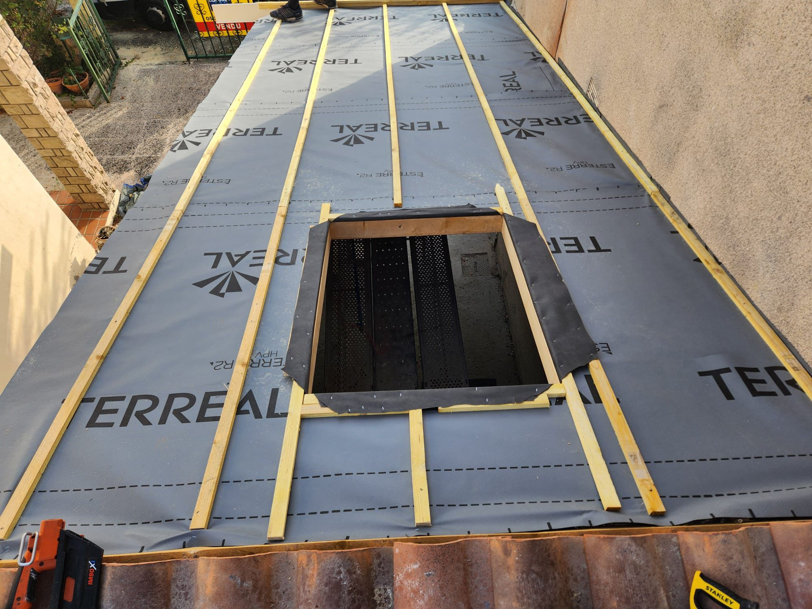
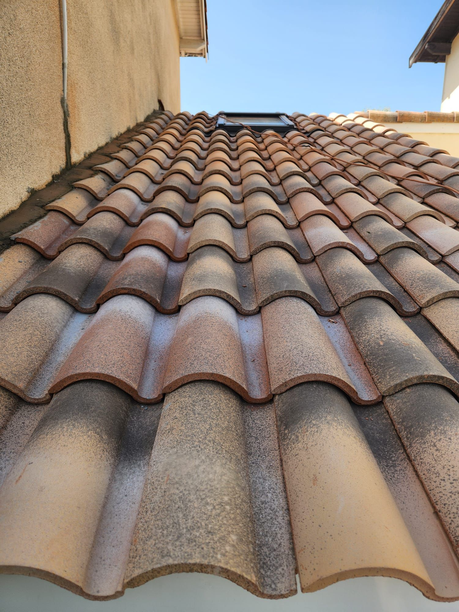
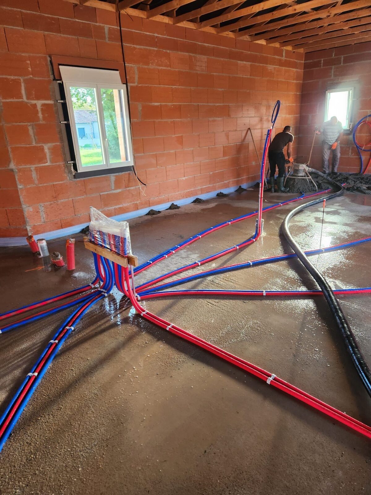

La toiture, c'est 30% des déperditions énergétiques d'une maison. Au-delà de l'étanchéité, c'est le confort thermique et acoustique qui se joue ici. On la traite comme un système complet.
La charpente, c'est ce qui porte votre toit. Choix entre charpente traditionnelle (pour combles aménageables) ou industrielle en fermettes (plus économique, pour combles perdus).
Nous intervenons aussi sur les modifications de charpentes existantes — surélévations, ouvertures de toiture, transformations pour rendre des combles habitables.

De la pose neuve à la réparation de fuite ponctuelle, en passant par la réfection totale. Tuiles canal, mécaniques, terre cuite, béton ou ardoise — selon le style de la maison et la commune (PLU).
La zinguerie (gouttières, descentes, faîtages, abergement de cheminée) est traitée par nos soins pour garantir une étanchéité parfaite et un rendu propre.

Une fois l'enveloppe étanche, on traite l'intérieur. Doublage des murs pour isolation thermique, cloisons Placoplatre® pour redécouper l'espace, faux plafonds, isolation phonique entre étages.
Les matériaux d'isolation sont choisis selon l'usage : laine de verre pour le standard, laine de roche pour l'acoustique, ouate de cellulose pour les projets écologiques.

On vient mesurer, monter sur le toit, et vous proposer la meilleure solution selon votre budget.